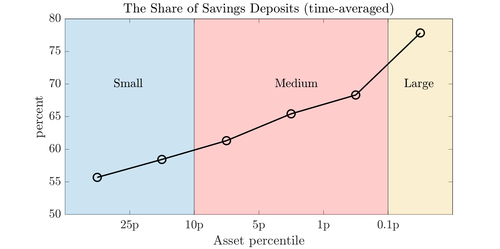

This paper examines the implications of banks' deposit mix and liquidity risk across the bank size
distribution for financial stability and macro-prudential policy. U.S. banks mix savings and time deposits,
with the share of savings deposits increasing in bank size. I incorporate this in a macroeconomic model of
banking industry dynamics, where heterogeneous banks choose their deposit mix and asset portfolio under
withdrawal risk in savings deposits. Repayment of withdrawals incentivizes banks to hold securities. Costly
time deposits protect against withdrawals and enable banks to substitute loans for securities. Withdrawal
risk
varies by bank size, explaining the balance sheet composition of assets and deposits, as observed in data. A
higher share of savings deposits coming from the low withdrawal risk reduces the average funding cost,
expands
the banking sector, and increases loans and output in the steady state but raises short-term financial
instability. When liquidity requirements are introduced, large banks are the most responsive; they increase
demand for securities and cut loan supply, leading to an unintended output cost associated with a less
concentrated banking sector in the long run.